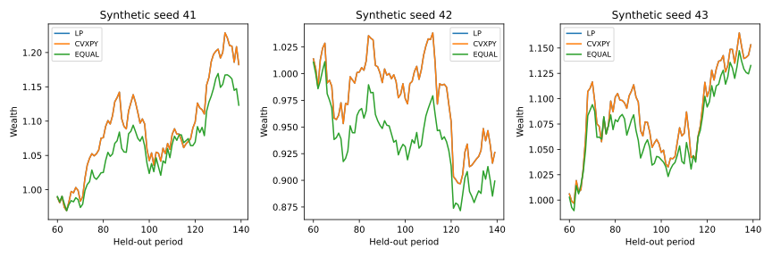

Research dashboard · 24 October 2026 · 6 new matched-benchmark tests
Opti-Workbench
Matched CVaR objective → independent solvers → feasibility → rolling evaluation
Decision and evidence
Adds a comparable empirical-CVaR benchmark using SciPy linear programming and CVXPY under identical long-only allocation constraints. Existing heuristic research remains available as a separate experiment.
Finding. Across 12 training windows, the maximum CVaR objective difference is approximately 9.73×10⁻¹⁰. Three synthetic seeds show both gains and losses in held-out periods. Solver agreement checks implementation, not investment superiority.
Do independent implementations solve the same tail-risk allocation problem?
- Match the problem. Both solvers minimise empirical 95% CVaR with identical long-only, fully invested weights and a 30% per-asset cap. This is a continuous optimisation problem; there are no integer positions or cardinality constraints.
- Check numerical correctness. Compare feasibility and objective values across 12 training windows. Maximum objective disagreement is approximately 9.73e-10. Solver agreement validates the implementation, not the realism of the data.
- Evaluate after training. Use four chronological test folds for each of three synthetic seeds, accounting for weight drift and 10bp turnover costs. Equal weighting is a feasible benchmark; retain both winning and losing test paths.
Calculation: CVaRα(w) = minη {η + mean[max(−Rw − η, 0)] / (1 − α)}; α = 0.95, sum(w) = 1, 0 ≤ w ≤ 0.30.
Evidence: matched_benchmark.py · test_matched_benchmark.py · results/matched/solver_audit.csv
Research views

Model mechanics
Minimise eta + mean(max(−R w − eta, 0))/(1−alpha), with sum(w)=1, w≥0 and w≤0.30. Alpha is 0.95. Four train/test folds per seed include drift, 10bp turnover cost, initial deployment and terminal liquidation.
From basic input reconciliation to stress analysis, each step has an auditable calculation trail in the repository.
Boundaries
No MILP/cardinality claim in the matched benchmark. Synthetic data are uncalibrated; equal weighting is feasible but does not optimise CVaR. The earlier dashboard and heuristic objectives remain separate.
Offline research software, not a production trading or asset-management system.
Data and reproducibility
Synthetic correlated panel generated by matched_benchmark.py, seeds 41/42/43, accessed/generated 24 October 2026.
summary.json — exact results and assumptions
{
"max_matched_objective_gap": 9.728051628132839e-10,
"seeds": [
41,
42,
43
],
"folds_per_seed": 4,
"heldout_periods_per_seed": 80,
"returns": {
"41": {
"LP": 0.1823984044124074,
"CVXPY": 0.1823984077700036,
"EQUAL": 0.12323378397051066
},
"42": {
"LP": -0.07379368750044835,
"CVXPY": -0.07379368178902179,
"EQUAL": -0.10070384064695559
},
"43": {
"LP": 0.15315047168197382,
"CVXPY": 0.15315046804547428,
"EQUAL": 0.13276718530025788
}
},
"source": "Seeded synthetic correlated returns",
"source_url": "https://github.com/Anjaney336/opti-workbench/blob/main/matched_benchmark.py",
"access_date": "2026-10-24",
"assumptions": {
"alpha": 0.95,
"cap": 0.3,
"turnover_cost": 0.001,
"initial_and_terminal_costs": true
},
"limitations": "All methods use the same 10-asset long-only feasible set; equal weight is not a CVaR optimizer. No cardinality or MILP. Synthetic data are not calibrated. Solver agreement is numerical verification, not evidence of investment superiority."
}